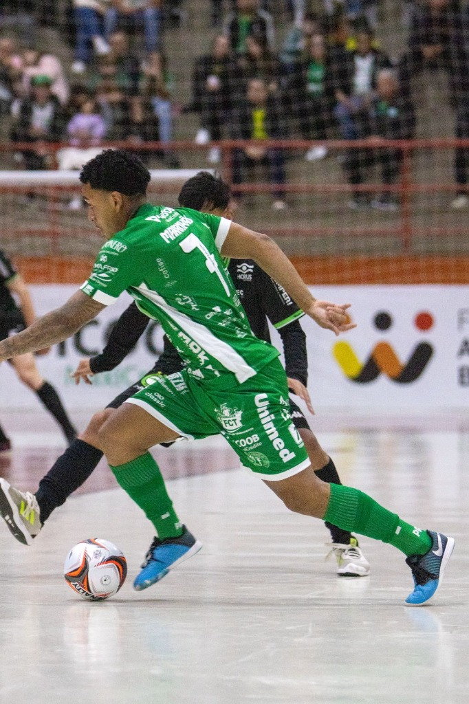
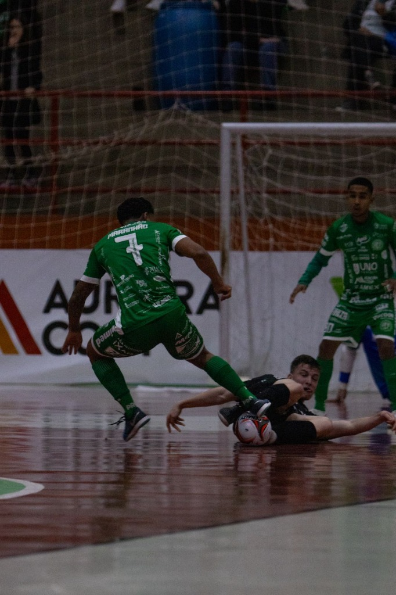
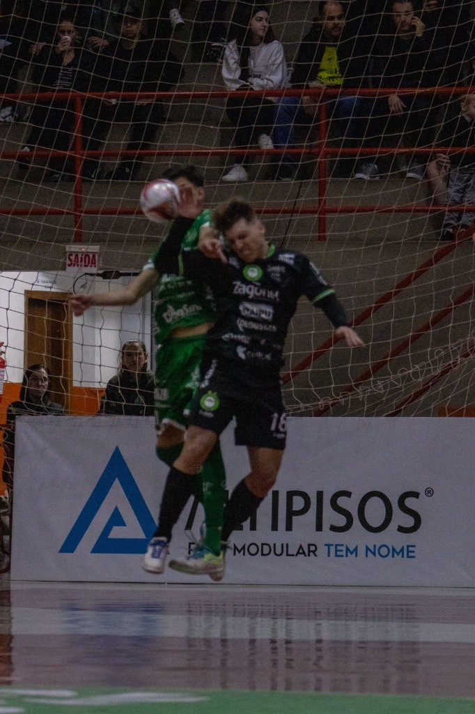

A Prefeitura de Chapecó/Chapecoense/Unochapecó jogou na noite desta quarta-feira (27), pela Copa Santa Catarina de Futsal. O Verdão das Quadras acabou superado pela Pinhalense por 4 a 2 em Chapecó, no Ginásio Plínio Arlindo De Nes (SER Aurora), que novamente recebeu belo número de torcedores.
O jogo começou animado, com chances para os dois lados. A Pinhalense saiu na frente em um chute forte e bem colocado de Mantelli, aos 3'56". A Chape Futsal reagiu rapidamente. Aos 4'54", João Seco completou arremate de Douglinhas para empatar. O gol motivou ainda mais anfitriões, que conseguiram virar o placar aos 9'14" com Ximba, que concluiu após jogada individual. Foi uma primeira etapa equilibrada.

Os visitantes igualaram novamente o marcador logo nos minutos iniciais. Aos 2'48", Leo Roos bateu bem para balançar a rede. Apesar da pressão dos donos da casa, a equipe de Pinhalzinho chegou ao terceiro gol novamente com Leo Roos, completando passe para a meta, aos 12'06". O Verdão das Quadras era todo ataque, mas aos 18'04" Mantelli acertou mais um chute e fez o quarto da Pinhalense.

O próximo desafio da Prefeitura de Chapecó/Chapecoense/Unochapecó será no dia 5 de junho, às 19h30, contra o São Lourenço, no Ginásio Plínio Arlindo De Nes (SER Aurora), em Chapecó, pela Série Ouro do Catarinense, onde lidera. Pela Copa SC, onde tem três pontos em dois jogos, o Verdão das Quadras jogará no dia 12 de junho, às 19h30, diante da Xaxiense, em Arvoredo.

Crédito das fotos: @rogersilva_fotografia/@achapefutsal